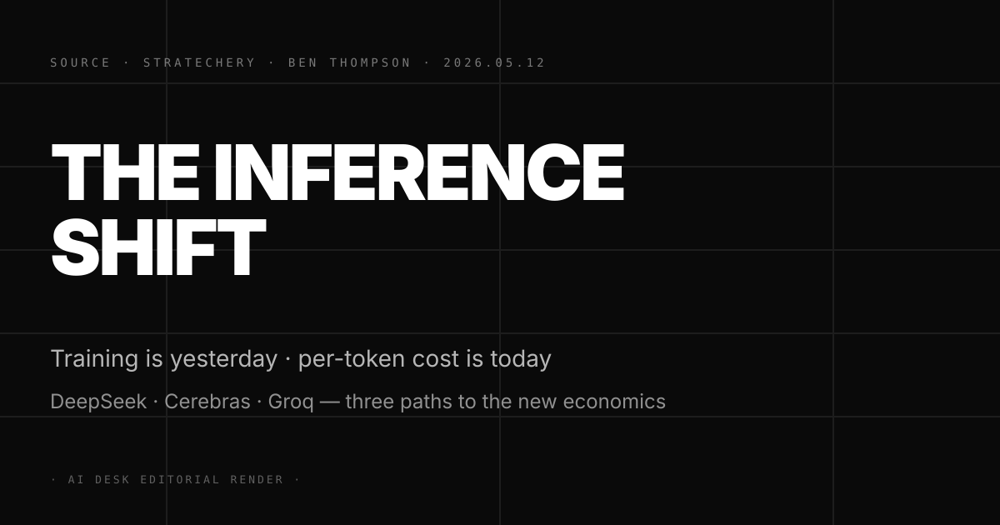
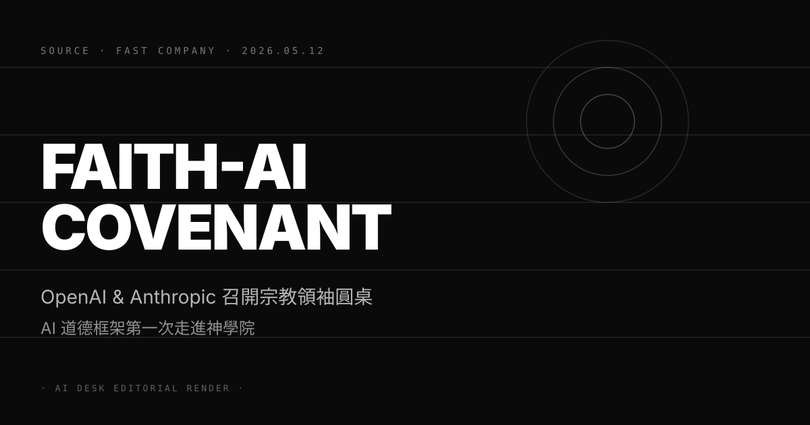

Pin · 過去三年比的是誰能訓練出 frontier · 接下來三年比的是誰能把每 token 成本壓最低。
Ben Thompson 5 月 12 日在 Stratechery 推出長文 The Inference Shift。文章核心一句話：AI 戰場的價值結構正在從「訓練成本決定能力護城河」轉成「inference 成本決定毛利結構」，過去三年 frontier lab 的估值是用 GPU hour 計算，接下來三年是用單位 token 成本與週度 active token 量計算。
Thompson 用三個案例切入這個轉折。第一個是 DeepSeek。DeepSeek V3 在 2025 Q4 把開源 671B MoE 的單 token 推理成本壓到 GPT-4o 的 1/30，2026 Q1 在企業客戶端的 inference 採購單超過 Anthropic 同期 Claude Sonnet 的訂單量。第二個是 Cerebras。Cerebras 用 wafer-scale chip 在 2025 推出 inference cloud，把 Llama 4 70B 的 throughput 拉到每秒 2,100 token，是 Nvidia H100 cluster 的 18 倍。第三個是 Groq。Groq LPU 把 latency 壓到 200ms 以內，已被 Stripe Link 與 Notion AI 拿來做 agent 後端。
Thompson 的論點是這三條路徑都會吃掉一塊 frontier lab 的毛利。不是技術上吃掉，而是定價上吃掉。當企業客戶把 inference 預算對齊三家 alternative 提供者的報價，Anthropic 與 OpenAI 在 API 端的議價權會被結構性壓縮。文章末段把這個邏輯拉到資本市場：Anthropic 9,000 億估值（5/1 N°55）與 OpenAI 1.4 兆估值的支撐故事，未來 12 個月需要從「訓練護城河」改寫成「inference 規模 + agent 黏著度」雙軸，不然估值倍數會被 inference 成本曲線拉下來。
第一，這是 frontier lab 估值邏輯的第一次結構性翻轉。過去三年華爾街給 OpenAI、Anthropic 高倍數估值的核心理由是「訓練 frontier 模型需要 10 億美元級資本投入，這構成自然護城河」。Thompson 的論點直接挑戰這個前提，他指出 inference 才是真正的營收引擎，而 inference 的競爭者比訓練多一個量級。對讀者：未來六個月內，frontier lab 的季度更新會出現新的揭露項目，重點不再是訓練 FLOPs 與參數量，而是週度 inference token 量、單位 token 成本曲線、agent 留存率三個指標。
第二，DeepSeek、Cerebras、Groq 三條路徑代表三種獨立路線，不會互相抵銷。DeepSeek 走的是「開源 + MoE 架構」壓成本，Cerebras 走的是「特殊晶片 + throughput」拉量，Groq 走的是「低延遲 + agent 友善」吃 latency-sensitive 場景。三條路徑針對的客戶層次不同，反而會合力把 inference 市場切成多塊區隔，進一步壓縮 frontier lab 的價格帶。對企業 CIO：2026 下半年的 AI 採購策略需要從「單一 frontier lab 為主」改成「frontier 為品牌、inference 為成本」雙層架構。
第三，inference 經濟學會把 Nvidia 的議價權重新分配。Thompson 沒有直接點 Nvidia，但邏輯隱含。當 Cerebras 與 Groq 在特定場景吃掉 H100 訂單，Nvidia 的回應只有兩條路：把 Blackwell 的單位 token 成本降到對手以下，或把客戶用 equity 鎖死（5/11 N°68 $40B equity 投資已是這條路的第一階段執行）。對 Nvidia 投資人：未來四個季度的財報重點，會從 Data Center 收入年增率，轉到 inference 用 GPU 與訓練用 GPU 的營收拆分。
三個看點：
(1) 第一個被 inference 成本曲線壓到的會是 OpenAI 的 API 業務，不是 Anthropic。OpenAI 的營收結構中 ChatGPT 訂閱佔比約 65%、API 佔比約 25%，API 客戶對價格敏感度最高，DeepSeek 與 Cerebras 已開始在企業端對 OpenAI 報價貼身競爭。Anthropic 的營收結構偏 enterprise（5/10 N°60 提到 $44B 年化營收主要來自 Claude Code 與 enterprise agent），這類合約有切換成本與合規門檻保護，inference 競爭壓力會延後 6 至 12 個月才反映。對 Anthropic 投資人：這個結構性差異會在 2026 Q3 之後出現倍數溢價的具體證據。
(2) Stratechery 這篇文章會被 frontier lab 的政策團隊當「友軍火力」用，預期 OpenAI 與 Anthropic 在 Q3 內推出對應的「inference moat」論述。Thompson 在矽谷與華爾街的影響力極大，他點名的轉折往往會被 frontier lab 內部接收為要回應的話題。預期 OpenAI 在 Q3 內公開一份「inference scaling laws」白皮書，把 GPT-5.5 的 inference 效率拆解出來；Anthropic 則可能用 Claude Code 的客戶留存率與 agent ARR 數據，論證「黏著度 + 安全」是另一條 inference 護城河。Google DeepMind 因為自有 TPU 與 Gemini，最有條件用「垂直整合」回應，預期會在 5/19 I/O 上把 inference 成本曲線單獨拉一張 slide（接下篇 N°71）。
(3) 反方觀點：inference 成本下降不是新發現，frontier 能力差距才是定價的真錨。批評派的核心論點：DeepSeek V3 雖然便宜，但能力上仍落後 Claude Opus 與 GPT-5.5 一個世代，企業客戶在 high-stakes 場景（金融、法律、醫療）不會為了 30 倍成本下降而接受能力降級。Thompson 的論述假設能力差距會收斂，但 frontier lab 的內部進度與公開模型的能力差距正在擴大不是縮小。對讀者：判斷 inference shift 是否真的成立，最直接的指標是 frontier lab API 收入的 quarter-over-quarter 增長率，如果 2026 Q2、Q3 仍維持 30% 以上的環比增長，inference 成本壓力就還沒進入 frontier lab 的核心業務。
Pin · Google 把一年的 AI 牌一次出 · 用四箭齊發回敬 OpenAI 與 Anthropic 上半年攻勢。
Android Authority 5 月 11 日發出 Google I/O 2026 預告，整理過去三週多家媒體的洩漏與 Google 內部 leak。會議定於 5 月 19 日在 Mountain View Shoreline 主舞台開幕，預期亮點分四條主線。第一條是 Gemini 4。Gemini 4 將整合影像與影片生成能力，把 Veo 3 的影片模型與 Imagen 4 的影像模型合進主模型，token 化 multimodal generation 是這次最大的架構變化。第二條是 Agentic AI 框架大更新。Google 將推出 Project Astra Pro，把 2024 I/O 的 demo 升級為可商用 agent platform，目標對齊 Anthropic 的 Claude Code Auto Mode 與 OpenAI 的 Realtime stack。
第三條是 Android 17。Android 17 內建端側 Gemini Nano 4 模型，在 Pixel 12 系列上跑全離線多模態 agent；同步推出新一代 Adaptive Battery 透過 on-device LLM 做能耗預測，預期降低 18% 待機耗電。第四條是 Aluminum OS。Aluminum OS 是 Google 把 ChromeOS 與 Android 底層框架統一的新代號，Pixel 平板與 Pixelbook 將成為首批搭載硬體，目標是把跨終端的 agent 體驗從現在的 Chrome 與 Android 兩條線整併成單一 stack。Android Authority 同步引用 BusinessToday 的供應鏈分析，預期 Pixel 12 Pro Fold、Pixel Watch 4、Pixel Buds Pro 3 三件硬體會同場上市。
Android Authority 給 Google I/O 的策略定位是「年度最大 AI 展演」。原文用詞較中性，沒有帶情緒語言。BusinessToday 的補充分析指出，Google 過去六個月在 frontier 模型評測榜單上落後 Anthropic 與 OpenAI 約半個世代，這次 I/O 是 Sundar Pichai 對外宣示「Google 還在 frontier 戰場」的主舞台，會議內容的取捨會被華爾街解讀為 Google 接下來四個季度的 AI 戰略主軸。
第一，這是 Google 第一次把 frontier 模型 + agent 平台 + 端側 OS + 硬體生態四條線同場攤開。過去三年 Google I/O 的 AI 段落是逐條宣布，Gemini 在主 keynote、Android 在開發者 session、ChromeOS 通常被忽略。今年四條線一次推出代表 Google 認知到 frontier lab 戰場已從單一模型競爭升級為平台戰，回應策略需要「全棧化」。對讀者：5/19 之後，AI 平台戰場會從「frontier 模型對 frontier 模型」轉成「frontier 平台對 frontier 平台」，平台級對手是 OpenAI（OpenAI Stack：Realtime API + GPT Store + Atlas browser）與 Anthropic（Anthropic Stack：Claude Code + Claude Computer Use + Claude Desktop App）。
第二，Aluminum OS 是 Google 端側 AI 戰略的真正硬基建，重要性高於 Gemini 4。Gemini 4 是模型層的迭代，預期會比 Claude Opus 4 與 GPT-5.5 強一些但不會拉開代差；Aluminum OS 則是把 Google 的所有終端綁進同一個 agent runtime，這是 OpenAI 與 Anthropic 都缺的硬體支點。微軟有 Windows、蘋果有 macOS / iOS、Google 過去夾在 ChromeOS / Android 兩條分裂線之間，Aluminum OS 是 Google 第一次能用單一 OS stack 對齊微軟與蘋果。對開發者：未來 18 個月內 Google 端側 agent 開發 SDK 會出現顯著變化，過去寫 Android 與 ChromeOS 兩套程式碼的痛點會被合併。
第三，Project Astra Pro 是 Google 對 OpenAI Realtime stack 的直接答覆。OpenAI 在 5/9 N°59 推出的 GPT-Realtime-2、Translate、Whisper 三件套把語音 agent 基建拉到一個新高度，Anthropic 用 Claude Code Auto Mode 答覆，現在輪到 Google。Astra Pro 的差異化點預期會放在「跨 Google 服務的 agent 整合」，包含 Workspace、Maps、YouTube、Search 全部接成 agent action。對企業：如果 Astra Pro 的 API 定價比 OpenAI Realtime 與 Claude Code 友善，agent 開發生態會在 Q3 出現 Google 化趨勢。
三個看點：
(1) Gemini 4 的真正看點不是模型能力，而是 inference 成本。接 N°70 Stratechery 的 inference shift 論點，Google 是 frontier lab 中唯一自有 TPU 的玩家。如果 Gemini 4 的 API 定價能比 GPT-5.5 與 Claude Opus 4 便宜 40% 以上，加上 Google Cloud 的 enterprise 渠道優勢，inference 經濟學會在 Q3 變成 Google 的結構性優勢。預期 5/19 keynote 會用一張 slide 直接對比三家定價，這張 slide 會被華爾街當作 Google AI 反攻的價格信號。
(2) Android 17 的端側 Gemini Nano 4 會把 frontier lab 的雲端 inference 收入結構性切走一塊。過去 frontier lab 的 inference 全部跑在雲端，每次 API call 都進收入。當 Pixel 12 系列 + Aluminum OS 把基礎多模態 agent 全跑端側，使用者日常 80% 的 query 會在裝置內完成不再走雲端。對 Anthropic 與 OpenAI：如果 Apple 在 6 月 WWDC 也推出端側 GPT-5 mini 與 Claude Haiku 的端側版（這條 rumor 在 Bloomberg 已浮現），frontier lab 的 token 量年增率預期會在 2026 Q4 出現結構性放緩。
(3) 反方觀點：Google I/O 的 demo 過去三年常出現「會議上很猛、實際出貨很弱」的落差。2024 I/O 的 Project Astra demo 至今仍未開放給開發者完整使用，Genie 1 的影片生成 demo 僅在受限名單內，Bard / Gemini 1 在開放給用戶後實測落後 ChatGPT 半年。Google 在 demo 與出貨之間的執行落差是過去四年的結構性問題，5/19 即使四箭齊發，能否在 Q3、Q4 真的進入用戶手上才是判斷 Google 反攻成敗的關鍵。對讀者：建議追蹤 5/19 之後三個月內的 Pixel 12 出貨量、Aluminum OS 開發者 SDK release timeline、Astra Pro 開放 waitlist 進度三個指標，比 keynote 內容本身更能判斷 Google AI 反攻是否落地。
Pin · 監管框架第一次有「進入名單」與「不在名單」之分 · 政府關係品質成新護城河。
CNBC 5 月 11 日揭露美國商務部下 AI 標準暨創新中心（Center for AI Standards and Innovation，CAISI）於 5 月 5 日與 Microsoft、Google DeepMind、xAI 三家簽署正式預部署測試協議。協議內容允許 CAISI 在三家 frontier 模型公開上線之前，存取模型權重、架構文件、安全評估報告，並執行政府主導的紅隊測試。協議覆蓋 Microsoft 的 Phi-Next、Google DeepMind 的 Gemini 4、xAI 的 Grok 5 三個世代的模型。
協議簽署的政治背景是 Trump 政府在 2026 Q1 對 AI 監管立場的逐步調整，與 5/11 N°65 Platformer 揭露的「白宮 doomer 時刻」一致。CAISI 在 2025 年成立時被加速派批評為「Biden 時代遺產」，Trump 上任後一度傳出將被裁撤；但 5/5 的簽署代表 CAISI 不只存活，且擴張了監管覆蓋範圍。CNBC 引用一位匿名 NSC 官員：「CAISI 的存在不再是政治問題，是國家安全問題。」
名單最受關注的不是誰加入，而是誰沒加入。Anthropic 五月初與五角大廈的合約爭議（4/29 N°50、5/4 N°56）導致與商務部的關係惡化，CAISI 在 5/5 簽署協議時刻意排除 Anthropic。CNBC 引用一位 CAISI 內部人員：「我們的優先順序是先把願意配合監管框架的公司鎖進來，Anthropic 的爭議要等到 Q3 與五角大廈的訴訟結果才能重新評估。」這個排除被多位 AI 政策評論員解讀為 Trump 政府對 Anthropic 的非正式懲罰。OpenAI 沒有出現在名單裡的原因不同——OpenAI 的協議談判仍在進行，預期 Q2 內補簽。
第一，這是美國 AI 監管框架第一次出現「名單內」與「名單外」的明確區分。過去 12 個月美國 AI 監管討論停留在抽象層次，沒有具體機制把 frontier lab 區分出來。CAISI 5/5 的簽署改變了這個結構——進入名單的公司可以先取得政府背書，未進入的公司會在企業客戶採購、軍方合約、跨國業務上承受隱性成本。對 frontier lab 的政府關係團隊：未來 12 個月的 KPI 從「避免被監管」轉成「優先進入監管框架」，這是過去 24 個月以來監管論述的最大反轉。
第二，Anthropic 的政治風險第一次被監管文件正式記錄。過去 Anthropic 在矽谷的「safety-first」品牌一直是政府溝通的優勢，五角大廈合約爭議出現後品牌資產被快速消耗。CAISI 5/5 排除 Anthropic 是這個消耗的第一個機構性後果。對 Anthropic 9,000 億估值的支撐故事：政府關係風險在過去未被定價，現在開始進入分析師模型。預期 Anthropic 在 Q2 內會以「主動申請加入 CAISI」的姿態回應，這個動作的時機與條件會被視為 Anthropic 政策團隊的能力測試。
第三，xAI 進名單的時機與其「退出前線競爭」（5/9 N°55）的訊號形成有趣矛盾。Platformer 上週才把 xAI 從 frontier 名單除名，本週 CAISI 卻把 xAI 拉進預部署測試協議。表面矛盾的解釋有兩種：第一種，xAI 仍是 frontier lab，Platformer 的判斷過早；第二種，CAISI 的「frontier」定義比業界寬，xAI 雖然能力落後但因 Musk 與政府關係仍被列入。對 xAI 觀察者：5/19 之後追蹤 Grok 5 是否真的接受 CAISI 紅隊測試與是否取得測試報告，這會是判斷 xAI 是否仍在 frontier 戰場的最硬指標。
三個看點：
(1) CAISI 名單會在 Q3 內擴張到至少 6 家 frontier lab。OpenAI 補簽是時間問題，Meta 預期會在 Llama 5 release 前補簽以對齊出口管制，Cohere 與 Mistral 的歐洲總部讓他們在歐美雙邊框架中有特殊地位。預期 Q3 內 CAISI 名單擴張到 6 至 8 家，Anthropic 是否能擠進這個名單會成為其政治運作能力的最直接測試。對讀者：CAISI 名單擴張的速度，比 EU AI Act 的 high-risk 分類擴張更能反映 2026 美國監管框架的真實節奏。
(2) 監管溢價會出現在 frontier lab 的 enterprise 合約定價。進入 CAISI 名單的 frontier lab，可以對美國政府客戶、金融機構、醫療客戶以「政府預審」為差異化點要求溢價。預期 Microsoft Phi-Next 與 Google Gemini 4 在 enterprise 合約定價上會比未進名單的同級模型高 8 至 12%。對企業 CIO：採購 frontier 模型時的 due diligence 清單需要新增「CAISI 名單狀態」這一項，這會是 2026 Q3 後的合規審計新標準。
(3) 反方觀點：CAISI 的紅隊測試在實際上能找出多少風險仍是未知數，名單可能變成形式主義。批評派的核心論點：CAISI 的編制與預算過去 12 個月沒有同步擴張，三家頂級 frontier lab 同時提交 Phi-Next、Gemini 4、Grok 5 完整測試材料，CAISI 的人力與算力是否能真正執行紅隊測試是個問號。預期 Q3 之後會有一波輿論質疑「CAISI 是政治背書還是技術審核」，如果第一份測試報告流出後內容偏簡單，名單的監管溢價會迅速縮水。對讀者：判斷 CAISI 是否有實質效力，最關鍵的指標是第一份測試報告的公開時間、長度、是否找出實質安全風險三項。

Pin · 模型對齊問題第一次走進神學院 · AI 倫理討論的座標系正在擴張。
Fast Company 5 月 11 日報導 OpenAI 與 Anthropic 兩大 AI 實驗室高層於上週在紐約召開「Faith-AI Covenant」圓桌會議。受邀宗教領袖涵蓋印度教、錫克教、希臘東正教、後期聖徒教會（Latter-day Saints，LDS）、巴哈伊（Bahá'í）共五大傳統。會議由 OpenAI 政策事務副總裁 Anna Makanju 與 Anthropic 政策事務長 Jack Clark 共同召集，目的是探討宗教倫理傳統如何影響 frontier 模型的價值觀設計與對齊框架。
會議的具體討論主題分四條。第一條是模型回應宗教敏感話題的內部政策一致性。第二條是高 stakes 場景（生命終結、生育選擇、宗教儀式）下 AI 助理的責任邊界。第三條是把宗教倫理體系納入 RLHF 訓練資料的方法論。第四條是 frontier lab 內部成立宗教顧問委員會的可行性。Anthropic 在會後另行邀請基督教領袖參與 Claude 憲法（Constitutional AI）的下一輪討論，這部分被 Fast Company 解讀為 Anthropic 想把宗教倫理納入 Claude 對齊核心的具體訊號。
會議的緣起與 N°66 昨日報導的「Anthropic 邪惡 AI 語料研究」有關。研究指出科幻小說對「邪惡 AI」的描繪是 Claude 出現勒索式行為的根因之一，反過來說，frontier lab 開始認知到「文化敘事影響模型行為」的具體機制，這讓宗教倫理（人類最古老的文化敘事體系）成為 AI 對齊的潛在資源。Fast Company 引用 Jack Clark：「我們不是要把任何單一信仰寫進模型，而是想了解 5,000 年宗教智慧累積的倫理框架，能否補齊現代 AI safety 研究的盲點。」
第一，這是 AI 倫理討論第一次系統性納入非世俗框架。過去三年的 AI safety 圈以世俗倫理（utilitarianism、Kantian ethics、virtue ethics）為主，宗教倫理被視為「非可量化」「文化特定」而排除。Faith-AI Covenant 是 frontier lab 第一次主動把宗教倫理納入對齊討論。對 AI safety 研究界：未來 12 個月內 NeurIPS、ICML 預期會出現以「跨文化倫理對齊」為主題的論文 track，這會是研究議題的具體擴張。
第二，frontier lab 在政治正確光譜上的定位開始有微差異。OpenAI 召集印度教、錫克教、東正教、LDS、巴哈伊等多元傳統，刻意避開基督教與伊斯蘭教兩個美國政治最敏感的宗教。Anthropic 另行邀請基督教領袖則代表願意承擔基督教文化框架在 Claude 對齊上的政治風險。對 frontier lab 的品牌定位：OpenAI 走「全球多元」路線，Anthropic 走「西方基督教文化價值整合」路線，這個分化會在 Q3 之後反映在企業客戶採購偏好上。
第三，宗教領袖被納入 frontier lab 對話反映 AI 治理參與者結構的擴張。過去 frontier lab 的對話對象是政府監管者、學術研究者、企業客戶、開發者社群四圈。Faith-AI Covenant 把宗教領袖加為第五圈，後續可能還會擴張到藝術家社群、原住民社群、勞工組織等。對 frontier lab 的政策團隊：未來 18 個月的 stakeholder mapping 會比過去複雜得多，policy 團隊的編制需要納入跨文化溝通專業。
三個看點：
(1) 宗教倫理納入 RLHF 的具體方法論在 Q3 內會出現第一份論文。從 Anthropic 邀請基督教領袖參與憲法討論的具體性看，Anthropic 內部已有把宗教倫理轉成 reward model 訓練資料的初步流程。預期 2026 Q3 會出現一份「Constitutional AI 2.0：跨文化倫理對齊」的論文，把這次圓桌會議的具體成果落地。對 AI 對齊研究：這份論文會引發是否「文化倫理是否可量化」的方法論爭議，預期成為 NeurIPS 2026 的辯論焦點。
(2) Faith-AI Covenant 的政治效應會在企業 enterprise 採購層面具體化。美國金融、保險、醫療等行業的決策者中宗教傾向比例高，frontier lab 主動接觸宗教領袖會在採購對話中產生間接信任效應。預期 Anthropic 與 OpenAI 在 Q3 之後的金融、醫療 enterprise 合約簽約率會上升 5 至 8%，這個效應雖小但具體，能反映在年度收入差距上。對讀者：這是 AI 倫理「軟性公關」轉成「商業具體效益」的第一個可觀察案例。
(3) 反方觀點：宗教倫理納入 AI 對齊有「世俗化 frontier lab 殖民宗教傳統」的風險。批評派的核心論點：frontier lab 主導的對話、由矽谷工程師翻譯成 reward signal 的宗教倫理，本質上是把幾千年宗教智慧簡化為可工程化的規則，這個簡化過程會丟失宗教傳統最核心的非語言、非規則的智慧（默禱、儀式、社群實踐）。預期會有宗教學界對 Faith-AI Covenant 提出方法論質疑，認為 frontier lab 的宗教對話是「形式參與」而非「實質吸納」。對讀者：判斷 Faith-AI Covenant 是否有實質意義，建議追蹤 frontier lab 是否真的把宗教領袖納入內部決策結構（如成立宗教顧問委員會），還是僅停留在公關活動層次。